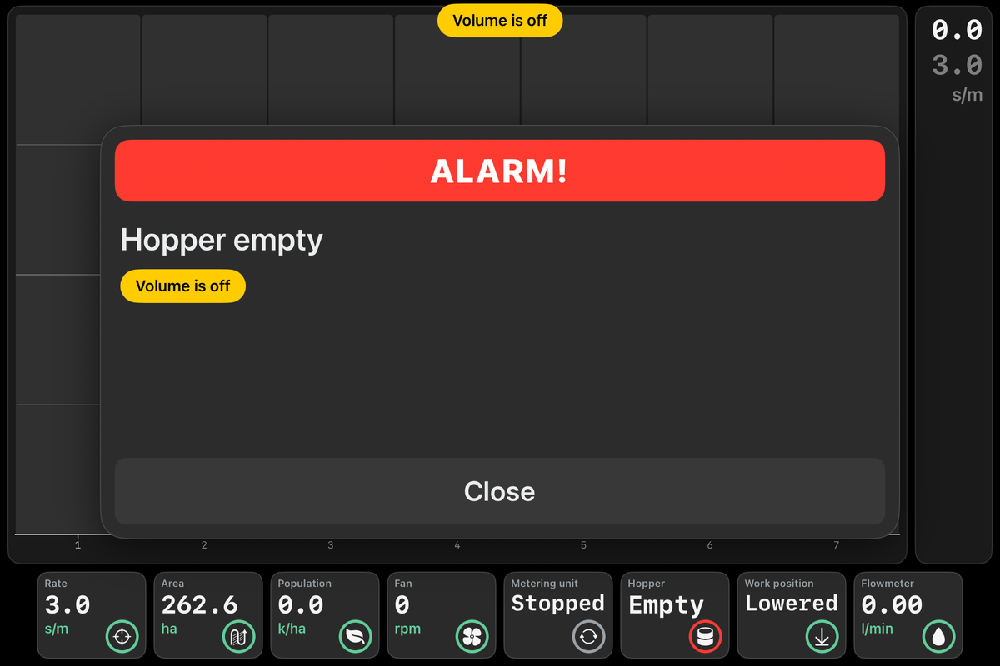

La fenêtre d'alarme
Quand l'app ouvre la fenêtre d'alarme, ce qu'elle affiche, comment les rangs la rejoignent, comment la fermer, et comment fonctionnent l'avertisseur sonore et le délai d'alarme.
Une alarme est une fenêtre qui s'ouvre par-dessus la page affichée, avec l'avertisseur sonore. Elle vous signale qu'un rang, un appareil de la machine ou la liaison avec la passerelle présente un défaut.

- « ALARM! » (alarme) — le bandeau de titre de toute fenêtre d'alarme ; il clignote. Rouge pour une alarme, orange pour un appareil qui se déclare défectueux (« Clogged » (bouché), « Light struck » (ébloui), « Faulty » (défectueux), « Wrong device type! » (mauvais type d'appareil) …).
- L'alarme — ici « Hopper empty » (trémie vide). Cherchez-la par ces mots dans les codes de service.
- La ligne de son — ici « Volume is off » (volume coupé) : l'avertisseur sonore fonctionne, mais le volume de la tablette est baissé. Montez-le.
- « Close » (fermer) — ferme la fenêtre et arrête l'avertisseur sonore. Tout le bouton réagit au toucher.
- La vignette de l'appareil en alarme, dont l'anneau clignote en rouge.
Pour un rang, la fenêtre nomme aussi le capteur et les rangs :

« Seed sensor: » (capteur de graines) ou « Fertilizer sensor: » (capteur d'engrais) indique le groupe, et les numéros de rang suivent — #4,12–14 signifie les rangs 4, 12, 13 et 14. Pour un actionneur de jalonnage, la fenêtre indique « Tramline actuator » (actionneur de jalonnage) et son numéro.
Comportement de la fenêtre
- Le défaut doit durer le délai d'alarme avant que la fenêtre s'ouvre — 3 secondes, sauf réglage contraire dans « Settings » (réglages) › « Control and Alarms » (contrôle et alarmes) › « Alarm delay » (délai d'alarme) (de 2 à 20 secondes). Un appareil qui n'est pas un capteur de graines (« Wrong device type! ») est signalé aussitôt.
- La même alarme sur un autre rang rejoint la fenêtre ouverte : son numéro s'ajoute. Une alarme différente attend que vous fermiez celle-ci, puis s'ouvre.
- Une alarme fermée ne revient pas tant que son défaut dure. Elle ne s'affiche de nouveau qu'après la disparition puis le retour du défaut.
- La liaison avec la passerelle passe en premier. Quand la liaison est coupée depuis 3 secondes, la fenêtre « Bridge link lost » (liaison avec la passerelle perdue) remplace toute autre fenêtre : tous les chiffres à l'écran sont périmés. Elle se ferme d'elle-même quand la passerelle répond de nouveau.
- Fermer la fenêtre ne répare pas le défaut. Les alarmes actives restent dans la liste derrière la cloche — voir Se déplacer dans l'app.
L'avertisseur sonore
L'avertisseur retentit tant qu'une fenêtre d'alarme est ouverte : un bref signal toutes les deux secondes, par le haut-parleur de la tablette. « Close » l'arrête. Tant qu'une bande est « NOT UNDER CONTROL » (hors surveillance), il retentit sans fenêtre.
Dans « Settings » › « Control and Alarms » › « Alarm buzzer » (avertisseur d'alarme) : « Volume » (« Quiet » (faible), « Medium » (moyen), « Loud » (fort)), « Test sound » (son d'essai) et « Quiet for 10 min » (silence 10 min). Le silence ne coupe que l'avertisseur : la fenêtre s'ouvre quand même.
Votre machine fait quelque chose que cette page n'explique pas ? Écrivez à support@agriwelt.com — un ingénieur vous répond.